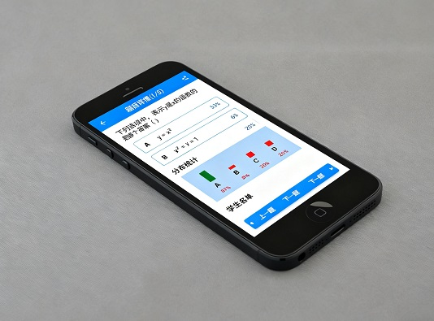

周三下午第三节数学课，李老师讲完 “一元二次方程求根公式”，抬眼扫过台下 42 个学生 —— 有人盯着黑板若有所思，有人低头在草稿本上写写画画，还有两个后排的孩子偷偷摸出了橡皮玩。她心里犯了嘀咕：例题跟着算都对，可真到独立解题时，他们到底会不会？
李老师习惯性地拿出提前印好的 3 道题，让学生写在练习本上。10 分钟后收上来批改，20 分钟过去，手里的红笔才划到第 15 本；等她算出 “全班 13 人错了第 2 题”，准备讲解时，下课铃已经响了。更让她无奈的是，她只知道 “有 13 人错了”，却不知道这 13 人是没记住公式，还是算错了符号 —— 只能下次课再 “笼统地补一遍”。
这样的场景，恐怕每个中小学老师都不陌生。课堂小测明明是教学里最 “刚需” 的环节，却常常因为 “耗时、滞后、模糊”，变成了老师的 “负担”。直到最近试了堂测 TangEST，李老师才发现：原来小测可以不用改卷子，不用等结果，甚至站在讲台就能知道 “谁错了、错在哪”。
先说说：课堂小测到底有多重要？
很多老师觉得 “小测耽误上课时间”，宁愿多讲两道例题，也不愿花 10 分钟让学生做题。但其实，小测才是让教学 “不做无用功” 的关键 —— 它就像医生的 “听诊器”，能帮你及时摸清学生的 “学情脉搏”。
首先，小测是 “即时诊断” 的利器。老师讲完一个知识点，自我感觉 “讲得很清楚”，但学生到底懂没懂，只有做题才知道。比如讲 “浮力计算”，你以为学生都掌握了 “F 浮 =ρ 液 gV 排”，但小测一道 “空心铁块漂浮” 的题，就能看出谁忽略了 “V 排≠V 物”。这种 “当场发现问题”，比等单元考才暴露问题，要高效得多 —— 毕竟，当天的漏洞当天补，比一周后再 “返工” 容易太多。
其次，小测能帮学生 “对抗遗忘”。根据艾宾浩斯遗忘曲线，新学的知识 1 小时后会遗忘 50% 以上。课堂上刚听完的内容，学生可能 “当时懂了”，但过一会儿就模糊了。小测的过程，其实是让学生 “主动回忆、快速应用” 的过程 —— 相当于给刚学的知识 “打了一针巩固剂”，比单纯 “重复听讲” 效果好 3 倍。
还有一点很重要：小测能 “调动课堂注意力”。只要学生知道 “这节课会有小测”，他们上课就不敢走神 —— 毕竟，没人想在小测里 “露怯”。有个语文老师做过实验：没小测的课，后排有 30% 的学生容易走神；加了 10 分钟小测后，走神率降到了 5%。而且小测的 “即时反馈”，还能给学生成就感 —— 比如做对的学生，会更有动力听接下来的内容；做错的学生，也会更专注听老师讲解自己的错误。
最后，小测是 “精准教学” 的基础。很多老师备课只看 “教参要求”，上课按 “预设节奏” 走，却忽略了 “学生的实际水平”。而小测的数据，能帮你摸清 “全班的薄弱点”：比如全班 80% 都错了第 3 题，那说明你讲这个知识点时 “方法不对”，需要换个思路再讲；如果只有 2 个学生错了，那只要课后单独辅导就行 —— 不用 “全班陪练”，浪费大多数人的时间。
可传统小测，为啥总让老师 “头疼”？
道理都懂，但真正做起来，传统小测的 “缺憾” 实在太明显 —— 几乎每个老师都被这些问题困扰过：
第一个痛点是 “批改耗时”。一个老师带 3 个班，每个班 40 人，小测 5 道题，哪怕每本卷子改 1 分钟，也要 120 分钟 —— 相当于两个小时的课后时间，全耗在改小测上。有个班主任吐槽：“每天下班先改小测，改完就 8 点多了，连陪孩子吃饭的时间都没有。” 更麻烦的是，遇到学生字迹潦草，还要猜 “这写的是 A 还是 B”，效率更低。
第二个痛点是 “反馈滞后”。传统小测要 “收卷→批改→统计→讲解”，一套流程下来，最少要等到下节课，甚至第二天。等老师拿着 “错误率” 去讲解时，学生早就忘了 “当时为什么这么选”—— 讲解效果大打折扣。比如周一的小测，周三才讲，学生可能只会说 “哦，当时我写错了”，却想不起来 “为什么错”，下次遇到类似题，还是会错。
第三个痛点是 “数据模糊”。传统小测最多能算出 “全班平均分”“某题正确率”，却不知道 “谁错了”“错在哪”。比如某题正确率 60%，你只知道有 40% 的学生错了，但不知道这 40% 是 “共性问题” 还是 “个别失误”；更不知道 “张三错了第 2 题，李四也错了第 2 题，但两人错的原因不一样”。这种模糊的数据，根本帮不了你 “精准辅导”，最后还是只能 “全班统一讲一遍”。
第四个痛点是 “组织繁琐”。要印卷子、发卷子、收卷子，光是这些环节，就要浪费 5-10 分钟。如果遇到 “卷子印少了”“学生弄丢了”，还要临时补，打乱课堂节奏。有个数学老师说：“有时候想搞个 5 分钟快测，结果光发卷子就用了 3 分钟，测完刚讲两道题就下课了，还不如不讲。”
现有信息化方案，为啥不适合 K12？
为了解决传统小测的问题，市面上也有不少 “信息化工具”，比如让学生用平板或手机答题 —— 但这些方案，在普通中小学里根本 “水土不服”。
首先是 “设备成本高”。一套学生平板少则几百，多则上千，一个班 40 人就要两三万，很多普通学校根本承担不起；就算学校买了，后续的维护、充电、更新，也是一笔不小的开销。农村学校更不用说，连网络都不稳定，平板根本用不了。
其次是 “管理难度大”。学生拿着平板或手机，很容易偷偷玩游戏、刷视频 —— 你在前面讲题，他在下面刷抖音，反而影响课堂纪律。有个初中老师试过用手机答题，结果发现有学生趁扫码的功夫，偷偷给同学发答案；还有学生把手机藏在桌肚里玩，一节课下来，题没答几道，游戏玩了不少。
最后是 “不符合规定”。现在很多地方明确要求 “中小学课堂不得使用手机”，家长也反对孩子上课用电子设备 —— 怕伤眼睛，更怕分心。你要是强行用手机或平板做小测，不仅会被家长投诉，还可能违反学校规定，吃力不讨好。
说白了，这些信息化方案，看似 “先进”，却没考虑到 K12 课堂的 “实际情况”—— 大多数学校没有足够的经费，大多数学生没有自控力，大多数家长不放心电子设备。所以，这些方案最后要么 “闲置在仓库”，要么 “用了几次就放弃”。
堂测 TangEST：一张纸 + 一个 APP，解决所有痛点
直到堂测 TangEST 出现，才真正 “踩中” 了 K12 课堂的需求 —— 它没搞复杂的电子设备，只用 “一张纸质二维码卡片” 和 “一个老师端 APP”，就把小测从 “低效耗时” 变成了 “秒级反馈”。
它的核心设计特别简单：给每个学生发一张 “专属二维码卡片”，卡片上绑定了唯一的学号，四个方向分别对应 A、B、C、D 四个选项。学生答题时，不用写、不用画，只要把卡片翻到自己选的选项方向（比如选 A 就把 A 面朝上），举起来就行。
老师呢？只要打开 “堂测 APP”，点击 “批量扫码”，站在讲台上对着学生举的卡片一扫 ——50 人的班级，4-5 秒就能收完所有答案，比走下去收卷子快 10 倍。而且不用担心网络，就算教室没网，扫码、统计、看结果，全程都能用；等有网了，数据会自动同步到云端，安全不丢失。

这个设计，完美解决了 K12 的痛点：不用学生买平板、不用带手机，一张纸就能答题，家长放心，学校支持；老师不用改卷子、不用等结果，扫码就能看数据，省时又省力。
有个农村学校的老师说：“我们教室网络不好，之前用平板答题，一断网就卡住；现在用堂测，没网也能测，扫完马上知道谁错了，讲解的时候特别有针对性。” 还有个小学老师说：“低年级学生不会用手机，用二维码卡片刚好，翻一翻就行，还能锻炼他们的反应力。”
好的工具，应该帮老师 “减负”，而不是 “增负”
其实每个老师都想把课教好，都想关注到每个学生，但现实是 “时间不够、精力有限”—— 传统小测消耗了太多时间，让老师没时间去研究教学方法，没时间去关注每个学生的需求。
而堂测 TangEST，恰恰是用最简单的方式，帮老师 “省出时间”—— 不用改卷子，不用等结果，不用猜 “学生懂没懂”，把省下来的时间，用在更重要的 “精准教学” 和 “个性化辅导” 上。
现在，已经有 200 多所学校的老师用堂测 TangEST 改变了教学：数学老师王老师说 “现在改小测不用加班了，课堂上就能知道谁没懂，讲解的时候特别有针对性”；班主任刘老师说 “和家长沟通时，拿着个人知识图谱，比说‘孩子有点弱’管用多了，家长也更配合”；农村学校的张老师说 “没网也能用，解决了我们学校的大问题，现在每周能多搞 2 次小测，学生的进步特别明显”。
如果你也被传统小测的 “耗时、滞后、模糊” 困扰，如果你也想让教学更有依据，让每个学生都被看见，不妨试试堂测 TangEST—— 不用买设备，不用改卷子，只用一张纸 + 一个 APP，就能让课堂小测 “变高效”，让你的教学 “更精准”。
毕竟，我们当老师的，想要的从来不是复杂的技术，而是一个能帮我们 “把课教好” 的工具 —— 而堂测 TangEST，就是这样的工具。编辑分享